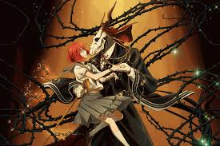
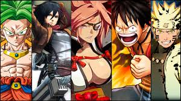

 Es la palabra japonesa para designar a la historieta en general. Fuera de Japón, se utiliza exclusivamente para referirse a los cómics de este país. Se traduce, literalmente, como "dibujos caprichosos" o "garabatos". Al profesional que escribe o dibuja mangas se le conoce como mangaka. El manga es la tradición de historieta más influyente del mundo, constituye una parte importantísima del mercado editorial de Japón y abarca todos los géneros, llegando a todos los públicos. En el manga, las viñetas y páginas se leen de derecha a izquierda, al igual que en la escritura tradicional japonesa.
La historia del Anime, curiosamente, comienza con uno de los padres del Manga moderno, Osamu Tezuka. En 1940 y tras leer Shintakarajima (la Isla del Tesoro) sintió como casi podía ver la película de lo que estaba leyendo, así tuvo la idea de introducir temáticas nuevas y con una historia basada en una estética visual. Hasta entonces el tema principal era la sátira política. Tezuka, diseño sus Manga mezclando breves textos, ilustraciones impactantes y narraciones que salían de los contextos tradicionales, llegando a tocar temas religiosos como una versión de la vida de Buda. Algunos de estos Manga fueron versionados en el formato televisivo o Anime. En los años sesenta y setenta Tezuka creó diversas obras para los Ánimes de sus Manga.
En función del segmento de población al que se dirigen:
morales ortiz angel de jesus 2IM4